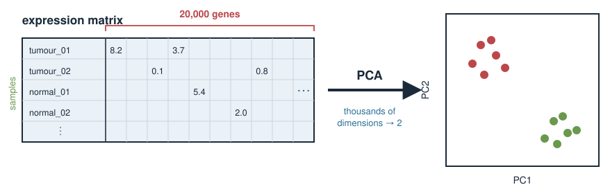
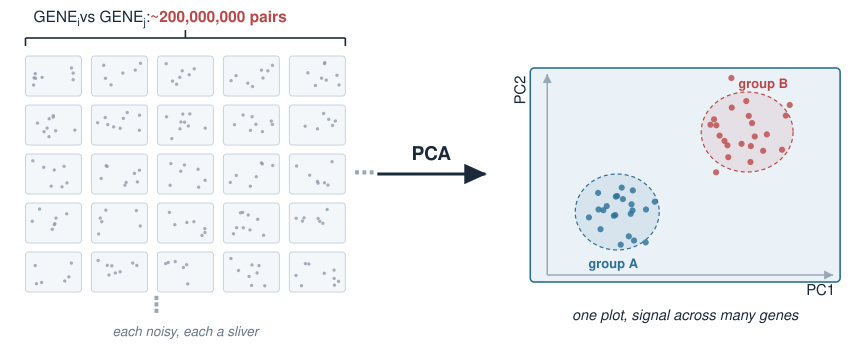
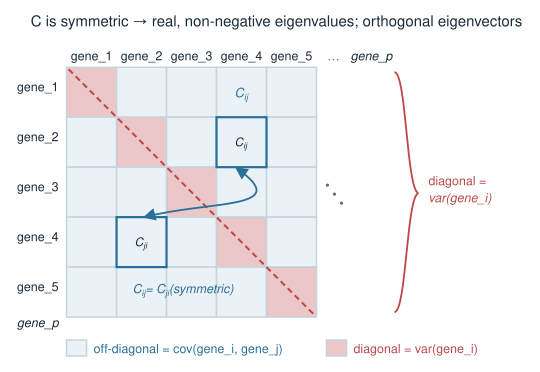
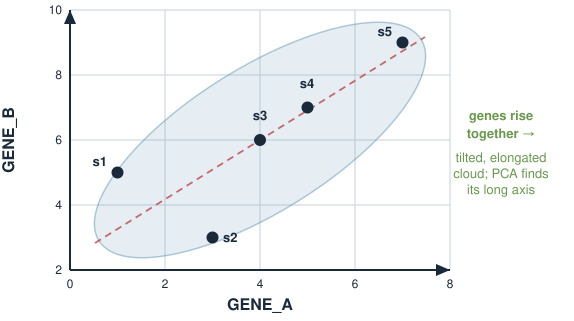
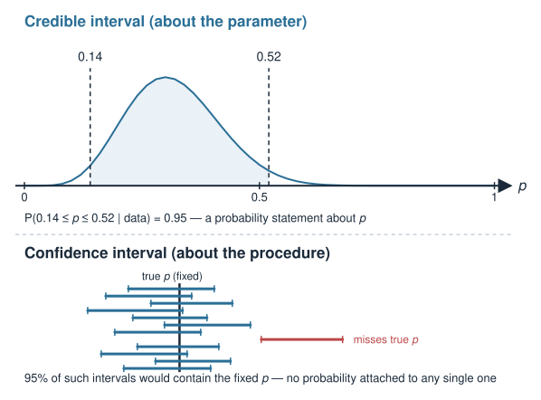

Slide editor sandbox
Copies of real slides for trying the slide editor
Quantitative biology and integrative omics
How to use this sandbox
Start the editor: make edit-slides (or node tools/slide-editor/server.mjs) and open the printed URL.
✎ Edit (top left, orange when on): click any text in a figure, type, press Enter to save or Esc to cancel. Click other text to open its source.Slide source : edit this slide’s markdown, then Save & render (or Ctrl+S). The page reloads on the same slide.Figures produced by an R script cannot be edited here (dashed outline); see the last slide.
Everything is saved into the repo files, so git diff shows exactly what changed.
Speaker notes are part of the slide source too, so they can be edited in the same panel.
The biology problem
A typical RNA-seq experiment gives an expression matrix: samples (rows) × genes (columns) .
tumour_01
8.2
0.1
5.4
…
2.0
tumour_02
7.9
0.0
5.1
…
2.3
normal_01
2.1
6.7
5.3
…
1.9
…
Each sample is a point in 20,000-dimensional space. We cannot look at it.
But the genes are not independent — they are co-regulated in programmes (cell-cycle genes rise together, immune genes rise together…).
So the real structure lives in far fewer dimensions than 20,000. PCA finds them.

Ground the abstraction in the data format they actually meet: a wide expression matrix, samples as rows, genes as columns, tens of thousands of columns. The key biological fact that makes dimension reduction possible is co-regulation: genes move together in programmes, so the effective number of independent directions is small. PCA is the tool that discovers those directions from the data alone, without being told the sample labels. Emphasise “unsupervised”: we do not tell PCA which are tumours; we ask whether structure falls out on its own. That is exactly what makes a PCA plot a good first look at any omics dataset.
Why not just look at genes one at a time?
You could plot GENE1 against GENE2 , then GENE1 against GENE3 , …
With 20,000 genes there are about 200 million pairwise scatter plots. Hopeless.
Any single gene is noisy and captures only a sliver of the biology.
The interesting signal — “these samples separate into two groups” — is usually spread across many genes at once , not visible in any single pair.
PCA builds new composite variables (mixtures of many genes) chosen so that the first few show the most variation . We look at those instead.

Motivate why marginal, one-gene-at-a-time thinking fails: too many pairs, each gene noisy, and the signal is distributed. This is the conceptual jump — from “measured variables” (genes) to “derived variables” (principal components) that are weighted combinations of all genes. Reassure them a PC is not mysterious: it is just a weighted sum of the genes, with weights (the loadings) chosen by the eigenvector. The choice criterion is “maximise variance”, which is where the covariance matrix and its leading eigenvector enter.
Recall: the covariance matrix
Variance measures spread of one variable; covariance measures how two vary together .
For p genes, the covariance matrix C is p \times p :
C_{ij} = \text{cov}(\text{gene}_i, \text{gene}_j), \qquad C_{ii} = \text{var}(\text{gene}_i)
Diagonal = each gene’s own variance. Off-diagonal = co-variation between gene pairs.C is symmetric because \text{cov}(g_i, g_j) = \text{cov}(g_j, g_i) .
From Eigenvalues & eigenvectors, a symmetric matrix has:
real, non-negative eigenvalues (they are variances — they cannot be negative), andorthogonal eigenvectors — a clean set of perpendicular axes.
Those eigenvectors are the principal components.

This is the load-bearing recall slide. Covariance generalises variance to pairs; stacking all pairwise covariances gives the symmetric p-by-p covariance matrix, diagonal = variances, off-diagonal = covariances. The symmetry is not a lucky accident — it is guaranteed because cov is symmetric in its two arguments. Then invoke the spectral theorem result they already proved: symmetric implies real eigenvalues and orthogonal eigenvectors. Add the biological reason eigenvalues are non-negative here: they equal variances along the eigen-directions, and variance cannot be negative. Land the punchline plainly: the eigenvectors of C are the principal components. The rest of the lecture unpacks that sentence on a tiny example.
A tiny worked example: two genes
Keep it to 2 genes and 5 samples so we can see everything by hand.
s1
1
5
s2
3
3
s3
4
6
s4
5
7
s5
7
9
Plot the 5 points with GENE_A on the x-axis, GENE_B on the y-axis.
The cloud is a tilted, elongated sausage — the two genes rise together (positive covariance).
PCA will find the long axis of that sausage.

Deliberately choose tiny round-ish numbers so every step is doable on the board. Two genes means the data cloud lives in the plane and the “long axis” is literally visible. Have students sketch the five points; they will see a diagonal, elongated cloud because gene A and gene B increase together. That visible long axis is PC1; the perpendicular short axis is PC2. Everything from here — centring, covariance, eigenvectors, scores — is making that visual intuition precise and numerical.
Credible interval vs confidence interval
Bayesian uncertainty comes straight from the posterior. A 95% credible interval is any interval holding 95% of the posterior probability:
P(\,0.14 \le p \le 0.52 \mid \text{data}\,) = 0.95 \quad (\text{for Beta}(7,15))
You are allowed to say the honest sentence: “there is a 95% probability that p lies in this interval.”
A frequentist 95% confidence interval does not mean that. It means: if you repeated the whole experiment many times, 95% of the intervals so constructed would contain the true fixed p . Any single interval either contains p or does not — no probability attached.
Statement about
the parameter
the procedure
“95% probability p is inside”
✓ allowed
✗ not allowed

This is the contrast students most often get wrong, so slow down. The credible interval is a direct probability statement about the parameter — legal for a Bayesian because p has a distribution. The confidence interval is a statement about the long-run behaviour of the interval-construction procedure, NOT about any single interval; strictly, a given 95% CI has already either caught p or missed it, with no probability. Most scientists secretly interpret their confidence intervals as credible intervals — the Bayesian version is the interpretation people actually want, made legitimate. Note the numbers here are illustrative (from qbeta on Beta(7,15)); the exact endpoints come from the R on the next slide.